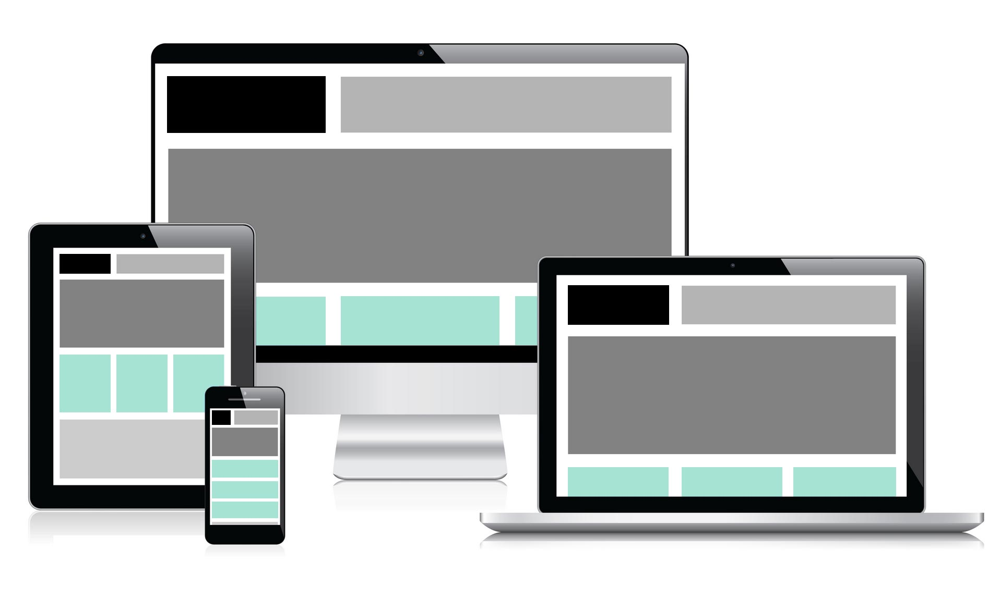

홈페이지 상세

블가다의 세번째 웹 프로그래밍 작품이다.
부트스트랩을 이용하였던 이전 웹들과 달리 시맨틱 UI를 사용하여 제작중이다.
사용 목적은 단기적으로 봤을때는 학교 수업 실습용, 장기적으로 봤을때는 티스토리 블로그 적용을 위함이다.
부트스트랩을 이용하였던 이전 웹들과 달리 시맨틱 UI를 사용하여 제작중이다.
사용 목적은 단기적으로 봤을때는 학교 수업 실습용, 장기적으로 봤을때는 티스토리 블로그 적용을 위함이다.
웹페이지 제작을 통해 추구하고 싶은 것
- 시맨틱 UI 활용 실습
- 시맨틱 구조 밑 웹 표준 연습
- 프론트 엔드의 자바 스크립트 완성
- 추후 node.js 웹서버 연동